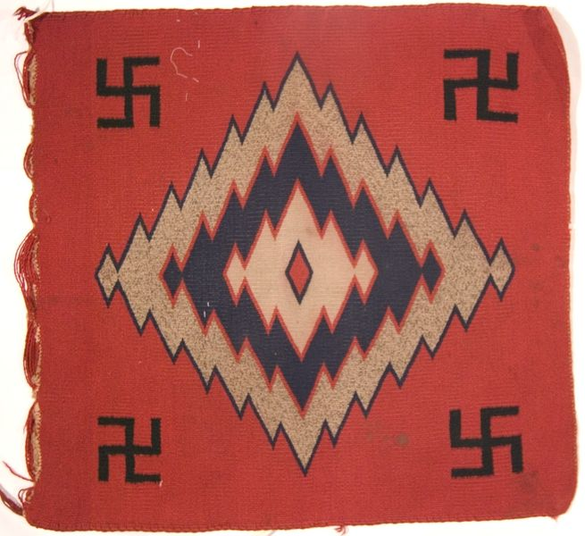
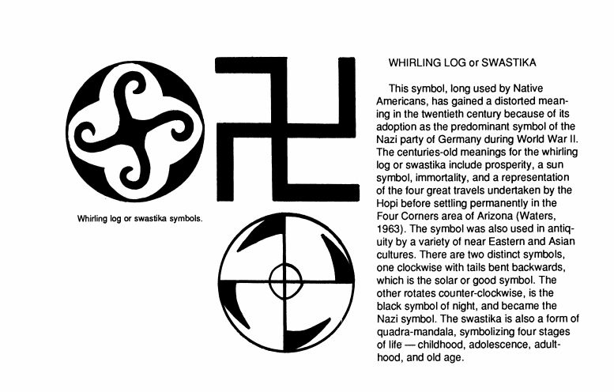

It is important to note the difference in cultural definitions of the swastika, especially in regards to the time period in question.
While twentieth-century European representations of the motif have valid negative connotations, 18th and 19th-century North American usages, in a Native American context, have different meanings.The word swastika comes from the Sanskrit svastika, which means “good fortune” or “well-being." (see "History of the Swastika")

